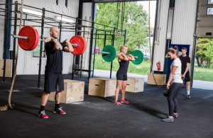

Bem-vindo à FitWave!
Na FitWave, acreditamos que o bem-estar é um estado de equilíbrio entre corpo, mente e espírito. Nossa missão é oferecer um espaço acolhedor e inspirador, onde você pode se conectar com sua saúde e potencializar seu bem-estar por meio de atividades físicas e práticas de autocuidado.
Missão da Empresa
Promover a saúde e o bem-estar integral de nossos clientes através de atividades físicas de qualidade, orientação nutricional e um ambiente acolhedor. Oferecer aulas diversificadas: Nossas atividades incluem yoga, pilates, treinamento funcional e meditação, permitindo que cada membro encontre o que melhor se adapta ao seu estilo de vida. Criar uma comunidade: Queremos que nossos clientes se sintam parte de uma família, onde apoio e motivação são a base de cada interação. Educação contínua: Investimos em workshops e palestras sobre saúde, nutrição e autocuidado, capacitando nossos clientes a tomar decisões informadas sobre seu bem-estar.
Visão da Empresa
Ser reconhecida como a principal referência em academias e estúdios de bem-estar, criando uma comunidade vibrante e engajada. Impacto positivo: Nosso objetivo é transformar a vida das pessoas, contribuindo para que se sintam mais saudáveis, confiantes e felizes. Inovação constante: Estamos comprometidos em oferecer as melhores práticas e tendências do mercado, atualizando continuamente nossos serviços e instalações. Sustentabilidade: Queremos integrar práticas sustentáveis em nossas operações, promovendo não apenas a saúde dos nossos clientes, mas também a do planeta.
Liderança no Setor de Bem-Estar:
Reconhecimento: Ser a escolha preferida entre academias e estúdios, destacando-se pela qualidade dos serviços, inovação e abordagem centrada no cliente. Excelência Operacional: Manter altos padrões em todas as operações, desde as aulas até o atendimento ao cliente, garantindo uma experiência excepcional.
Promoção de um Estilo de Vida Saudável:
Ohanian é casado com a tenista Serena Williams, com quem tem uma filha, Olympia. Ele também é conhecido por suas iniciativas voltadas para a igualdade de direitos, especialmente em relação à licença parental e à promoção de ambientes de trabalho mais justos para pais e mães.
Construção de Comunidade:
Engajamento Social: Organizar eventos e atividades que promovam a interação entre os membros, criando um senso de pertencimento e apoio mútuo. Parcerias Locais: Colaborar com outras organizações e profissionais de saúde para expandir o alcance e os recursos disponíveis para nossos clientes.
Inovação e Sustentabilidade:
Práticas Sustentáveis: Implementar políticas que promovam a sustentabilidade ambiental, como o uso de produtos ecológicos e redução de resíduos. Adoção de Novas Tecnologias: Utilizar tecnologia para melhorar a experiência do cliente, como aplicativos para agendamentos e acompanhamento de progresso.
Crescimento e Expansão:
Expansão de Serviços: Continuar a diversificar a oferta de serviços com novas modalidades e programas que atendam às necessidades em evolução dos nossos clientes. Franquias e Filiais: Futuramente, considerar a expansão através de franquias ou filiais, levando o conceito FitWave para outras comunidades.
Junte-se a Nós!
Venha conhecer nossos programas e descubra como a FitWave pode ajudá-lo a alcançar seus objetivos de saúde e bem-estar.
ㅤ